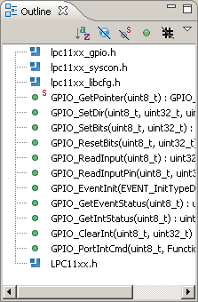
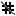

Outline View
The Outline view displays an outline of a structured C/C++ file that is currently open in the editor area, by listing the structural elements.

Outline view toolbar icons:
The table below lists the icons displayed in the Outline view toolbar.
| Icon |
Description |
|
Sort items alphabetically |
|
Hide Fields |
|
Hide Static Members |
|
Hide Non-Public Members |
 |
Hide Inactive Elements |
|
Outline view menu |
Outline view icons:
The table below lists the icons displayed in the Outline view.
| Icon |
Description |
 |
Class |
|
Namespace |
|
Macro Definition |
|
Enum |
|
Enumerator |
|
Variable |
|
Field private |
 |
Field protected |
 |
Field public |
 |
Include |
|
Method private |
 |
Method protected |
 |
Method public |
 |
Struct |
|
Type definition |
|
Union |
|
Function |
|